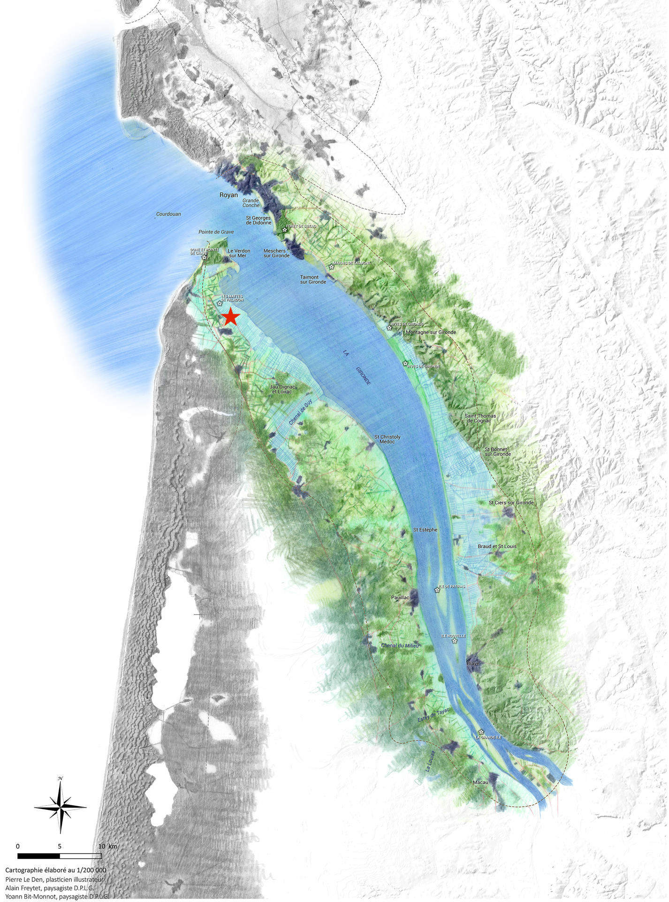

À propos de Printemps des Marais
Association loi 1901 (février 2025) dédiée à la création et à la conservation d’une réserve de biodiversité en zone humide, sur les rives de l’estuaire de la Gironde. Un projet à la croisée de l’écologie, du patrimoine et de la culture.
Notre mission
Printemps des Marais est une association loi 1901 née en février 2025, dédiée à la création et à la conservation d’une réserve de biodiversité en zone humide, sur les rives de l’estuaire de la Gironde (Nouvelle-Aquitaine). Notre projet, initialement prévu pour cinq ans renouvelables, allie écologie, patrimoine et culture afin de sensibiliser aux enjeux environnementaux des milieux humides. Nous agissons sur un terrain agricole de 8 hectares, situé à Talais (33590), pour y développer un modèle innovant de gestion écologique et artistique.

Un projet pluridisciplinaire
- L’écologie — Réintroduction d’un élevage de poneys landais, race patrimoniale menacée, pour restaurer et entretenir les écosystèmes par le pâturage extensif. Études scientifiques régulières pour suivre l’évolution de la faune, de la flore et des habitats, en collaboration avec des experts.
- Le patrimoine — Valorisation des savoir-faire locaux et des espèces endémiques, avec une limite d’un poney par hectare pour préserver l’équilibre naturel.
- L’art et la pédagogie — Intégration d’installations artistiques éphémères (nichoirs, perchoirs, abris) conçues par des artistes, comme Alix Delmas, et organisation d’événements pour partager notre démarche avec le public.
- La recherche et la documentation — Partenariat avec la société Sauces Production pour un suivi audiovisuel du projet, sans financement de notre part, afin de témoigner de cette aventure humaine et écologique.
Nos actions concrètes
- Restauration du terrain — Achat, remise en état des accès, clôtures, points d’eau et haies, plantation d’essences locales, ré-ensauvagement des mares.
- Accueil des poneys landais — Élevage confié à Laurie Jayet, agricultrice-éleveuse, dans le respect des limites écologiques et avec une approche expérimentale.
- Infrastructures durables — Bâtiments démontables en bois (abris, bureau, stockage) et œuvres artistiques intégrées au paysage.
- Partage et transmission — Animations pédagogiques, rencontres avec des experts, et soutien à des publications sur les liens entre l’homme et le vivant.
Une gouvernance collaborative
- Alix Delmas (artiste, présidente) — Cohérence esthétique et logistique des installations.
- Laurie Jayet (agricultrice-éleveuse, secrétaire) — Élevage et gestion écologique du terrain.
- Pascal Cardeilhac (réalisateur, trésorier) — Documentation et communication du projet.
Nous finançons nos actions grâce aux cotisations des membres (25 €/an), aux subventions, au mécénat et aux revenus générés par nos événements. En cas de dissolution, nos biens seront cédés à une structure partageant nos valeurs de protection de la nature.
Rejoignez-nous !
Printemps des Marais est ouvert à celles et ceux qui souhaitent s’engager pour la biodiversité et les zones humides.
Siège social : 308 Passe Castillonnaise, 33590 Talais — Contact : printempsdesmarais@gmail.com
« Protéger les marais, c’est préserver l’avenir. »